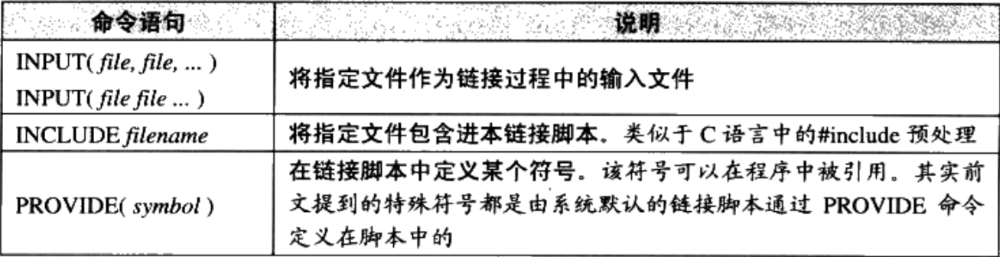
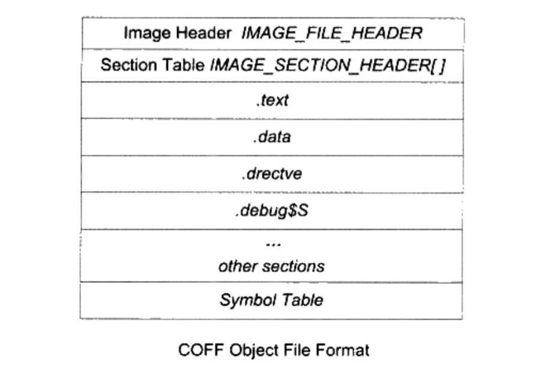

记录一下elf文件的知识点
静态链接
空间与地址分配
相似段合并
一个更实际的方法是将相同性质的段合并到一起，比如将所有输入文件的”.text”合并到输出文件的”.text”段，其他段相同。
两步链接
第一步 空间与地址分配 扫描所有的输入目标文件，并且获得它们的各个段的长度、属性和位置，并且将输入目标文件中的符号表中所有的符号定义和符号引用收集起来，统一放到一个全局符号表。这-一步中，链接器将能够获得所有输入目标文件的段长度，并且将它们合并，计算出输出文件中各个段合并后的长度与位置，并建立映射关系。
第二步 符号解析与重定位 使用上面第-步中收集到的所有信息，读取输入文件中段的数据、重定位信息，并且进行符号解析与重定位、调整代码中的地址等。事实上第二步是链接过程的核心，特别是重定位过程。
符号解析与重定位
重定位表
ELF文件中，有一个叫重定位表的结构专门用来保存这些与重定位相关的信息，往往在ELF文件中是一个或多个段。
例如，代码段”.text”如有要被重定位的地方，那么会有一个相对应叫”.rel.text”的段保存了代码段的重定位表，可以使用objdump来查看
objdump -r a.o
这个命令可以用来查看 “a.o” 里面要重定位的地方。 每个要被重定位的地方叫一个重定位入口( Relocation Entry)，我们可以看到 “a.o” 里面有两个重定位入口。重定位入口的偏移(Offset)表示该入口在要被重定位的段中的位置，“RELOCATION RECORDS FOR [.text]” 表示这个重定位表是代码段的重定位表，所以偏移表示代码段中须要被调整的位置。
对于32位的x86处理器来说，重定位表的结构也蛮简单的，是一个Elf32_Rel结构的数组，每个数组元素对应一个重定位入口。Elf32_Rel的定义如下:
1 | typedef struct{ |
指令修正方式
这个感觉还挺有意思的，记录一下
指令在寻址方面主要有以下区别：
- 近址寻址或远址寻址
- 绝对寻址或相对寻址
- 寻址长度为8位，16位，32位或64位
但是对于32位x86平台下的elf文件的重定位入口所修正的指令寻址方式只有两种：
- 绝对近址32位寻址
- 相对近址32位寻址
这两种重定位方式指令修正方式为每个被修正的位置的长度都为32位，即4个字节。重定位入口的r_info成员低8位表示重定位入口类型，如表所示。
对照a.o的重定位信息

对swap符号的引用类型是R_386_PC32，这是一条相对位移调用指令。shared是R_386_32类型的。它修正的是一条传输指令的源，该传输指令的源是一个立即数，即shared的绝对地址。
接下来让👴康康具体过程
这是a.o没有被修正的时候：
绝对寻址修正
偏移为0x18的这条mov指令的修正，修正方式为R_386_32，即绝对地址修正，结果应该是S+A
- S是符号shared的实际地址，即0x3000
- A是被修正位置的值，即0x00000000
所以最后这个重定位入口修正后的地址为:0x3000+0x00000000=0x3000
相对寻址修正
偏移为0x26的这条call指令，修正方式为R_386_PC32，即相对寻址修正，结果应该为S+A-P
- S是符号swap的实际地址，即0x2000
- A是被修正位置的值，即0xFFFFFFFC(-4)
- P为被修正的位置，当链接成可执行文件时，这个值应该是被修正位置的虚拟地址，即0x1000+0x27
所以最后这个重定位入口修正后地址为:0x2000+(-4)-(0x1000+0x27)=0xFD5

这条相对位移调用指令调用的地址是该指令下一条指令的起始地址加上偏移量，即:0x102b+0xFD5=0x2000,刚好是swap函数的地址。
从这两个例子可以看出来,绝对寻址修正和相对寻址修正的区别就是
绝对寻址修正后的地址为该符号的实际地址:相对寻址修正后的地址为符号距离被修正位置的地址差。
最”小“的程序
ld链接脚本语法
语句类型
- 命令语句
- 链接语句
语法
- 语句之间使用分号”;”作为分割符 原则上讲语句之间都要以”;”作为分割符，但是对于命令语句来说也可以使用换行来结束该语句，对于赋值语句来说必须以”;”结束。
- 表达式与运算符 脚本语言的语句中可以使用C语言类似的表达式和运算操作符，比如+、-、* 、l、+=、-=、*=等，甚至包括&、l、>>、<<等这些位操作符。
- 注释和字符引用 使用/**/作为注释。脚本文件中使用到的文件名、格式名或段名等凡是包含“;”或其他的分隔符的，都要使用双引号将该名字全称引用起来，如果文件名包含引号，则很不幸，无法处理。
来个demo:
1 | ENTRY(nomain) |
解释一下：
这是一个非常简单的链接脚本，第一行的 ENTRY(nomain)指定了程序的入口为nomain()函数，后面的SECTIONS命令一般是链接脚本的主体，这个命令指定了各种输入段到输出段的变换，SECTIONS后面紧跟着的一对大括号里面包含了SECTIONS变换规则，其中有三条语句，每条语句一行。第一条是赋值语句，后面两条是段转换规则，它们的含义分别如下:
- . = Ox08048000 + SIZEOF_HEADERS 第一条赋值语句的意思是将当前虚拟地址设置成Ox08048000 + SIZEOF_HEADERS，SIZEOF_HEADERS为输出文件的文件头大小。“.”表示当前虚拟地址，因为这条语句后面紧跟着输出段“tinytext”，所以“tinytext”段的起始虚拟地址即为Ox08048000 + SIZEOF_HEADERS。它将当前虚拟地址设置成一个比较巧妙的值，以便于装载时页映射更为方便。
- tinytext : { * (.text) * (.data) *(.rodata)} 第二条是个段转换规则,它的意思即为所有输入文件中的名字为“.text”、”.data” 或 “.rodata” 的段依次合并到输出文件的“tinytext”。
- /DISCARD/ : { “(.comment)} 第三条规则为:将所有输入文件中的名字为 “.comment“的段丢弃，不保存到输出文件中。
常用的命令语句

SECTIONS命令
SECTIONS命令语句的最基本格式:
1 | SECTIONS |
secname表示输出段的段名，secname后面必须有一个空格符，这样使得输出段名不会有歧义，后面紧跟着冒号和一对大括号。大括号里面的contents描述了一套规则和条件，它表示符合这种条件的输入段将合并到这个输出段中。输出段名的命名方法必须符合输出文件格式的要求，比如，如果使用ld生产一个a.out格式的文件，那么输出段名就不可以使用除“.text”、”.data”和“.bss”之外的任何名字，因为a.out格式规定段名只允许这三个名字。
有一个特殊的段名叫“/DISCARD/“，如果使用这个名字作为输出段名，那么所有符合后面contents所规定的条件的段都将被丢弃，不输出到输出文件中。
接着，我们最应该关心的是contents这个规则。contents中可以包含若干个条件，每个条件之间以空格隔开，如果输入段符合这些条件中的任意一个即表示这个输入段符合contents规则。条件的写法如下:
filename(sections)
filename表示输入文件名，sections表示输入段名，来几个栗子尝尝：
- file1.o(.data)表示输入文件中名为file1.o的文件中名叫.data的段符合条件。
- file1.o(.data .rodata)或file1.o(.data，.rodata)表示输入文件中名为file1.o的文件中的名叫.data或.rodata的段符合条件。
- file1.o如果直接指定文件名而省略后面的小括号和段名,则表示file1.o的所有段都符合条件。
- (.data)所有输入文件中的名字为.data的文件符合条件。 * 是通配符，类似于正则表达式中的，我们还可以使用正则表达式中的?、[]等规则。
[a-z]*(.text*[A-Z])这个条件比较复杂，它表示所有输入文件中以小写字母a到z开头的文件中所有段名以.text开头，并且以大写字母A到Z结尾的段。从这个规则中你也许可以看到一些链接脚本功能的强大。
Windows PE/COFF文件
COFF文件结构

文件头里描述的COFF文件总体属性的映像头是一个”IMAGE_FILE_HEADER”的结构。这个结构以及相关常数定义在”VC\PlatformSDK\include\WinNT.h”里面
1 | typedef struct _IMAGE_FILE_HEADER{ |
后面紧跟着段表，它是一个类型为”IMAGE_SECTION_HEADER”结构的数组，数组中的每个元素代表一个段。
也被定义在WinNT.h里面:
可以看到每个段所拥有的属性包括段名( Section Name )、物理地址( Physical address)、虚拟地址(Virtual address)、原始数据大小(Size of raw data)、段在文件中的位置(File pointer to raw data)、该段的重定位表在文件中的位置(File pointer to relocationtable )、该段的行号表在文件中的位置( File pointer to line numbers)、标志位( Characteristics）等。
| 字段 | 含义 |
|---|---|
| VirtualSize | 该段被加载至内存后的大小 |
| VirtualAddress | 该段被加载至内存后的虚拟地址 |
| SizeOfRawData | 该段在文件中的大小。注意:这个值有可能跟 VirtualSize的值不一样，比如.bss 段的SizeOfRawData是0，而VirtualSize值是.bss段的大小。另外涉及一些内存对齐等问题，这个值往往比 VirtualSize 小 |
| Characteristics | 段的属性，属性里包含的主要是段的类型（代码、数据、bss )、对齐方式及可读可写可执行等权限。段的属性是一些标志位的组合，这些标志位被定义在WinNT.h里，比如IMAGE_SCN_CNT_CODE ( Ox00000020）表示该段里面包含的是代码;IMAGE_SCN_MEM_READ ( Ox40000000)表示该段在内存中是可读的;IMAGE_SCN_MEM_EXECUTE ( Ox20000000 )表示该段在内存中是可执行的，等等 |
符号表和ELF文件类似，不在赘述
PE文件
PE文件相较于COFF多了几个结构，主要的变化有两个：
第一个是文件最开始的部分不是COFF文件头，而是DOS MZ可执行文件格式的文件头和桩代码(DOS MZ File Header and Stub);
第二个变化是原来的 COFF文件头中的“IMAGE_FILE_HEADER”部分扩展成了PE文件文件头结构“IMAGE_NT_HEADERS”,这个结构包括了原来的“Image Header”及新增的PE扩展头部结构(PE Optional Header)。PE文件的结构如图5-2所示。
“IMAGE_DOS_HEADER”结构唯一需要关心的就是”e_lfanew”成员，它表明了PE文件头(IMAGE_NT_HEADERS)在PE文件中的偏移。
“IMAGE_NT_HEADERS”是PE真正的文件头，它包含了一个标记和两个结构体。标记是一个常量，值为0x00004550，按照小端序，对应的是’P’、’E’、’\0’、’\0’这四个字符的ASCII码。文件头包含的两个结构分别是映像头(Image Header)、PE扩展头部结构。定义如下：
映像头的结构如下：
PE数据目录
在 Windows系统装载PE可执行文件时,往往须要很快地找到一些装载所须要的数据结构，比如导入表、导出表、资源、重定位表等。这些常用的数据的位置和长度都被保存在了一个叫数据目录(Data Directory)的结构里面，其实它就是前面“IMAGE_OPTIONAL_HEADER”结构里面的“DataDirectory”成员。这个成员是一个“IMAGE_DATA_DIRECTORY”的结构数组，相关的定义如下: